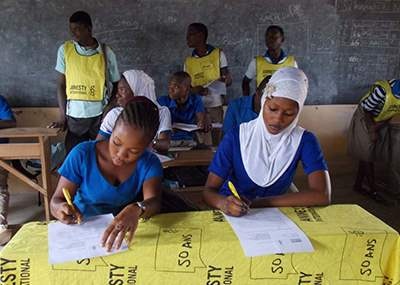

La evolución de Amnistía
A lo largo de los años, los derechos humanos han pasado de ocupar un lugar marginal a estar en primer plano de
los asuntos mundiales.
Amnistía ha ido ampliando sus reivindicaciones y ha pasado de pedir la liberación de presos y presas políticos
a defenderel espectro completo de los derechos humanos. Nuestro trabajo protege y empodera a la gente de varias
maneras, con la abolición de la pena de muerte, la proteción de los derechos sexuales y reproductivos,
la lucha contra la discriminación o la defensa de los derechos de personas refugiadas y migrantes,
entre otras. Alzamos la voz en nombre de todos cuantos ven amenazadas su libertad y dignidad.
|

|